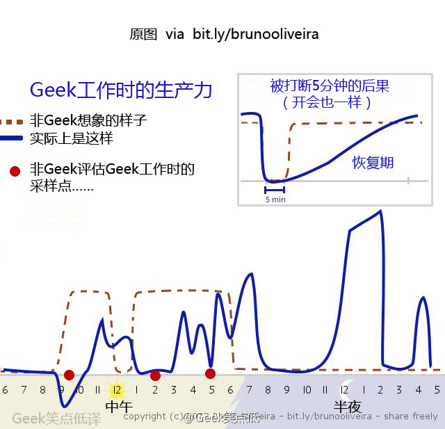

下面是一幅在网上广为流传、关于程序员工作效率的图片： → 以下は、ネット上で広く出回っている、プログラマーの仕事効率に関する画像です：

辛普森爸爸也许会说：这很有趣，因为事实正是如此。 → シンプソンズのパパはこう言うかもしれません：「これは面白い。なぜなら現実がまさにそうだからだ」と。
我还没有搞清楚保持高效的诀窍，主要是因为我从没有一贯的高效。周思博（Joel Spolsky）曾在他的一篇博客中说过： → 私はまだ効率を維持するコツを解明していません。主な理由は、一貫して効率的だったことがないからです。ジョエル・スポルスキー（Joel Spolsky）はかつて彼のブログでこう述べています：
有时我什么事都干不了。 → 時々、私は何もできなくなります。
当然，我走进办公室，到处闲逛，十秒钟就检查一次电邮，看网页，甚至干些不用脑子的事，比如支付美国运通的账单。但就是不会回到写代码的流程上来。 → もちろん、オフィスに入ってぶらぶらし、10秒ごとにメールをチェックし、ウェブページを見たり、アメックス（American Express）の請求書を支払うような頭を使わないことまでやります。しかし、コードを書く流れに戻ろうとはしません。
这样的低效症一发作一般都要持续一两天。但在我的职业生涯里，作为程序员，曾经好几次一连几个星期什么事都干不了。就像他们说的，我心不在焉，我状态不好，我根本不在状态。 → このような非効率症の発作は、一般的に1〜2日続きます。しかし、私のキャリアの中でプログラマーとして、何度か数週間連続で何もできなかったことがあります。彼らが言うように、私は上の空で、調子が悪く、まったく集中できていませんでした。
这篇文章我读了五六遍，仍然深感震动，因为这样一个程序员界的标志性人物也会有这样菜鸟的问题。 → 私はこの記事を5、6回読みましたが、今でも深く衝撃を受けています。なぜなら、このようなプログラマー界の象徴的な人物にも、こんな初心者的な問題があるからです。
还好，不只是我有这样的问题。 → 幸いなことに、私だけがこのような問題を抱えているわけではありません。
这里我没有保持高效的秘诀分享，但是我可以告诉你们什么让我的效率低下： → ここでは効率を維持する秘訣は共有できませんが、何が私の効率を低下させるのかはお伝えできます：
- 开放式房间布局 → オープンな部屋のレイアウト（オフィス）
- 程序员争论Django与.NET哪个好 → プログラマーがDjangoと.NETのどちらが優れているか議論する
- 程序员笼统的争论 → プログラマー同士の漠然とした議論
- 同事过来问："嘿，我的邮件你收到没？" → 同僚が来て尋ねる：「ねえ、私のメール届いた？」
- 嚼东西的声音。很明显我有恐音症 → 物を噛む音。明らかに私はミソフォニア（音嫌悪症）です
- 对于我手上的问题还不理解 → 目の前の問題をまだ理解できていない
- 怀疑这个项目 → このプロジェクトへの疑念
- 手上有多个任务要完成，它们都是十万火急的 → 手元に完了すべき複数のタスクがあり、それらすべてが非常に緊急である
- 有十万火急的事，其他事都别干了 → 非常に緊急なことがあると、他のことはすべてやめてしまう
- 手机微博消息提示音 → スマートフォンの微博（ウェイボー）のメッセージ通知音
- 电邮提示弹窗 → メール通知のポップアップ
- 任何弹出窗口 → あらゆるポップアップウィンドウ
- 即时通信软件 → インスタントメッセージングソフトウェア
- 老婆问："嘿，可以拿一分钟来帮我做件事吗？" → 妻が尋ねる：「ねえ、ちょっと1分だけ手伝ってくれる？」
- build时间很长 → ビルド時間が長い
- 噪音 → 騒音
- 办公桌前老有人走来走去 → オフィスの机の前を人が頻繁に通り過ぎる
- 公司集体活动 → 会社の集団活動（チームビルディング等）
- 维基百科（我是说真的，不要点任何链接） → ウィキペディア（本当に、リンクをクリックしないでください）
- Hacker News
- 总体来说，互联网都会影响效率 → 全体的に、インターネットは効率に悪影響を与える
过去这些事让我工作效率不错： → 以前は以下のことで仕事の効率が良かった：
- 安静的环境 → 静かな環境
- 安静的办公室（个人专用办公室太少见了） → 静かなオフィス（個人専用のオフィスはあまりにも珍しい）
- 理解项目下一步我该干什么 → プロジェクトで次に何をすべきか理解している
- 对于问题有透彻的认识 → 問題に対する徹底的な理解がある
- 没有打扰 → 邪魔が入らない
- 我是认真的：没有打扰 → 本当に：邪魔が入らないこと
- 远离微博 → 微博（ウェイボー）から離れる
- 远离Hacker News → Hacker Newsから離れる
- 硬件不出问题 → ハードウェアに問題がない
- 热爱正在工作的项目 → 取り組んでいるプロジェクトを愛している
- build和debug的时间不长 → ビルドとデバッグの時間が長くない
- 不要在网上争论政治 → オンラインで政治について議論しない
很明显，低效因素中有一半是我自找的，但是有些不是，例如开放式办公室布局。 → 明らかに、非効率の要因の半分は自分で招いたものですが、一部はそうではありません。例えば、オープンなオフィスレイアウトです。
根本上讲，我们每个人都能控制造成我们低效的因素。我不会和平对抗。我要不就强硬表态，要不就坐着任由其他人在我身边走动。对此我真不擅长应对。所以，我在处理外部低效因素方面没有好建议，但是我知道这一条：控制我能控制的。意思是： → 根本的に言えば、私たち一人ひとりが非効率を引き起こす要因をコントロールできます。私は平和的な対抗策は取りません。強い態度で表明するか、さもなければ座って他の人が自分の周りを歩き回るのをただ許すかのどちらかです。これに対してうまく対処するのは本当に苦手です。だから、外部の非効率要因への対処については良いアドバイスはありませんが、これだけは分かっています：自分がコントロールできるものをコントロールする。つまり：
- 关闭我iPhone上的提示（还有个好处就增加了待机时间） → iPhoneの通知をオフにする（待機時間が延びるという利点もある）
- 连续编码3小时就给我自己一个奖励（通常形式是"上网时间"，看看黑客新闻或是微博） → 3時間連続でコーディングしたら自分にご褒美を与える（通常は「ネットの時間」という形で、Hacker Newsや微博を見る）
- 当真的真的有事要干才在家工作 → 本当に本当にやるべきことがある時だけ在宅勤務する
- 投资一个性价比高的抑噪耳机 → コストパフォーマンスの高いノイズキャンセリングヘッドホンに投資する
- 在日历上安排"无会"时间，向别人表明你在这些时间很忙，这是我的工作时间。 → カレンダーに「会議なし」の時間を予定し、その時間帯は忙しいことを他の人に示す。これは私の仕事時間です。
- 不要卷入办公室程序员的争论；人们有强烈的个人观点，而程序员的特性就是喜欢争论。如果真是有业务问题需要解决，让我们去会议室去，把每种方法的优缺点都摆出来。用数据说话，别只是争吵。 → オフィスのプログラマーの議論に巻き込まれないこと。人々は強い個人的見解を持っており、プログラマーの特徴として議論好きです。本当に解決すべきビジネス上の問題があるなら、会議室に行って、各方法の長所と短所を並べましょう。ただの口論ではなく、データで語りましょう。
- 把办公桌摆在不会被过路人打扰的地方。 → オフィスの机を、通行人の邪魔が入らない場所に置く。
- 先看一遍问题，然后再请另一位程序员为我详细的解释一遍，这样我可以对要干的工作有更好的理解。这样做实现了两点：第一，这使我能掌握形势，使得我至少能对工作的要点有个基本了解。第二，它让我在求助时能问出更聪明的问题。 → まず問題を一通り見てから、別のプログラマーに詳しく説明してもらい、やるべき仕事をよりよく理解できるようにする。これには2つの利点があります：第一に、状況を把握でき、少なくとも仕事の要点を基本的に理解できます。第二に、助けを求める時により賢い質問ができるようになります。
原文链接： → 原文リンク： George Stocker
译文链接： http://blog.jobbole.com/73383/ → 翻訳リンク： http://blog.jobbole.com/73383/
点我分享笔记 → クリックしてノートを共有
<p style="font-size:14px;">笔记需要是本篇文章的内容扩展！</p><br> <p style="font-size:12px;"><a href="../tougao.html" target="_blank">文章投稿，可点击这里</a></p> <p style="font-size:14px;"><a href="./runoob-user-test-intro.html" target="_blank">注册邀请码获取方式</a></p> <h3 class="text-muted"><i class="fa fa-info-circle" aria-hidden="true"></i> 分享笔记前必须<a href=".." class="runoob-pop">登录</a>！</h3> <p><a href="./runoob-user-test-intro.html" target="_blank">注册邀请码获取方式</a></p> → <p style="font-size:14px;">ノートは本記事の内容を拡張したものである必要があります！</p><br> <p style="font-size:12px;"><a href="../tougao.html" target="_blank">記事の投稿はこちらをクリック</a></p> <p style="font-size:14px;"><a href="./runoob-user-test-intro.html" target="_blank">登録招待コードの取得方法</a></p> <h3 class="text-muted"><i class="fa fa-info-circle" aria-hidden="true"></i> ノートを共有する前に<a href=".." class="runoob-pop">ログイン</a>が必要です！</h3> <p><a href="./runoob-user-test-intro.html" target="_blank">登録招待コードの取得方法</a></p>